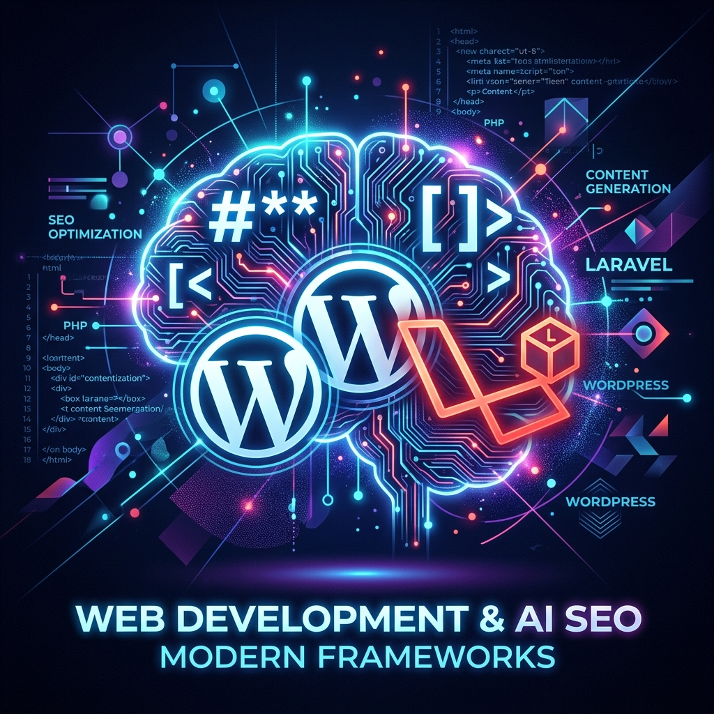

Markdown for AI and Accept Headers in WordPress SEO Plugins & Laravel


Introduction
SEO plugins in WordPress often claim to support advanced features like Markdown for AI, but many overlook the importance of properly handling HTTP Accept headers. This oversight can lead to compatibility issues, reduced performance, and missed opportunities for optimization in modern frameworks like Bedrock and Sage from Roots — and even in full-stack frameworks like Laravel.
What is Markdown for AI?
Markdown for AI refers to structuring content in Markdown format so that AI-driven tools and search engines can better parse, understand, and present information. It enhances readability, improves semantic structure, and supports rich snippets in search results.
AI agents (like Claude or ChatGPT) often request Markdown using Accept: text/markdown. Respecting this header is the difference between marketing hype and true standards compliance.
The Role of Accept Headers
The HTTP Accept header tells the server what type of content the client can handle (e.g., text/html, application/json, text/markdown). Ignoring this header means plugins may serve the wrong format or fail to deliver optimized content for AI and SEO crawlers.
Why Accept Headers Matter
- Content Negotiation: Ensures the right format is delivered to the right client.
- SEO Optimization: Search engines benefit from properly structured responses.
- AI Integration: AI tools consume Markdown more efficiently when headers are respected.
Sample Code Snippets
1. Testing Accept Header with curl
# Request Markdown output from a WordPress or Laravel site
curl -H "Accept: text/markdown" https://example.com/post/hello-world2. WordPress Plugin Hook Example
add_filter('the_content', function($content) {
if (strpos($_SERVER['HTTP_ACCEPT'], 'text/markdown') !== false) {
// Convert HTML content to Markdown
return html_to_markdown($content);
}
return $content;
});3. Bedrock/Sage Controller Example (Acorn)
namespace App\Http\Controllers;
use Illuminate\Http\Request;
class PostController
{
public function show(Request $request, $slug)
{
$post = get_post_by_slug($slug);
if ($request->header('Accept') === 'text/markdown') {
return response(html_to_markdown($post->post_content))
->header('Content-Type', 'text/markdown');
}
return view('single', ['post' => $post]);
}
}Laravel PHP Support for Markdown Features
Middleware for Accept Header
namespace App\Http\Middleware;
use Closure;
use Illuminate\Http\Request;
use League\HTMLToMarkdown\HtmlConverter;
class MarkdownResponse
{
public function handle(Request $request, Closure $next)
{
$response = $next($request);
if ($request->header('Accept') === 'text/markdown') {
$converter = new HtmlConverter();
$markdown = $converter->convert($response->getContent());
return response($markdown, 200)
->header('Content-Type', 'text/markdown');
}
return $response;
}
}Controller Example
use Illuminate\Http\Request;
use League\HTMLToMarkdown\HtmlConverter;
class ArticleController extends Controller
{
public function show(Request $request, $slug)
{
$article = Article::where('slug', $slug)->firstOrFail();
if ($request->header('Accept') === 'text/markdown') {
$converter = new HtmlConverter();
return response($converter->convert($article->content))
->header('Content-Type', 'text/markdown');
}
return view('articles.show', compact('article'));
}
}Bedrock/Sage vs. Laravel: Markdown for AI Support
| Feature / Approach | Bedrock & Sage (WordPress Roots) | Laravel (PHP Framework) |
|---|---|---|
| Core Philosophy | Modernized WordPress stack with Composer, clean theming, semantic markup | Full-stack PHP framework with MVC, middleware, and service providers |
| Accept Header Handling | Acorn controllers or plugin hooks ($_SERVER['HTTP_ACCEPT']) |
Middleware or controller logic ($request->header('Accept')) |
| Markdown Conversion | Plugins/controllers convert HTML to Markdown | Use league/html-to-markdown in middleware/controllers |
| Canonical URL Strategy | Same URL serves HTML or Markdown depending on header | Same route serves HTML or Markdown depending on header |
| SEO Benefits | Prevents duplicate content, respects canonical URLs | Same benefits: single canonical route, efficient for AI agents |
| Developer Workflow | Hooks/controllers integrated into WordPress ecosystem | Middleware/controllers integrated into Laravel lifecycle |
| Example Code | add_filter('the_content', ...) or Acorn controller |
Middleware intercepts response, converts HTML to Markdown |
Best Practices
- Respect Accept Headers: Ensure plugins and apps deliver content in the requested format.
- Validate Markdown Output: Confirm that AI tools and crawlers receive proper Markdown.
- Test in Bedrock/Sage & Laravel: Verify behavior in both ecosystems.
- Monitor SEO Impact: Track how structured content affects search rankings.
Conclusion
For WordPress developers, Laravel engineers, and SEO professionals, true Markdown for AI support requires more than marketing claims. Respecting Accept headers is a technical necessity that ensures compatibility, enhances SEO, and unlocks the full potential of frameworks like Bedrock, Sage, and Laravel.
By adopting these practices, plugins and applications can deliver on their promises and empower sites to perform better in both search and AI-driven contexts.